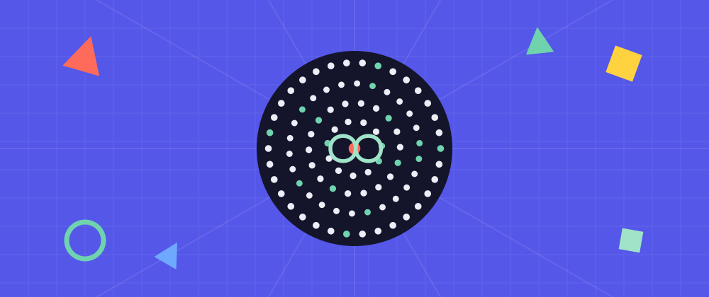
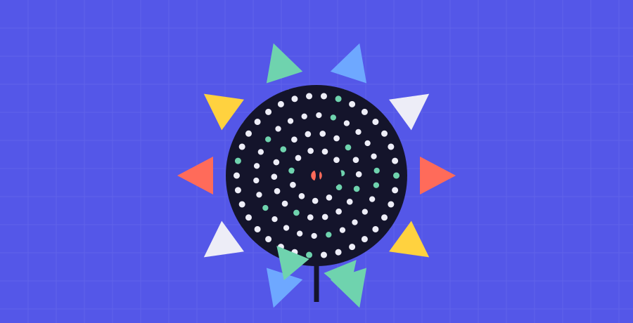
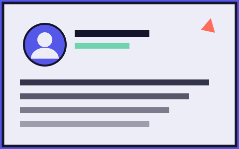
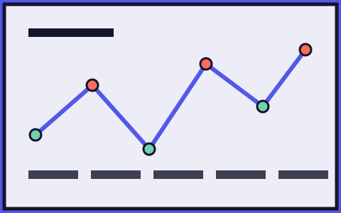
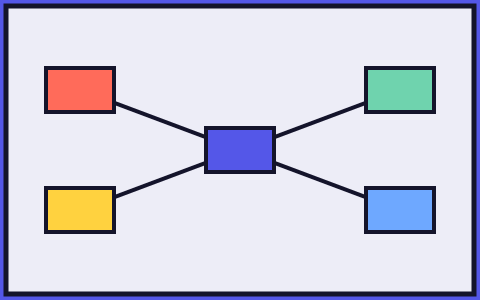

つくっている人

木下 貴博 / TAKAHIRO KINOSHITA
Designer & Developer — 木下スタジオ / kinoshita studio · 滋賀
滋賀・琵琶湖を拠点に活動するデザイナー・プロダクト開発者。
UX/UIデザイン・アートディレクション・個人開発まで、ひとりで担う。
BMBoard・Atelier・KODOCO を個人開発。
木下 貴博について →
名は、ある大切なアルバム《Mothership》より。母艦――人とAIが帰っていく場所。 ロゴは金の無限 ∞。そこには意味が重なっている。
① AIと人が刺激しあう、終わらない関係 · ② 作る→詰める→貯めるの循環 · ③ 生成のライブループ
「ゼロから手を動かす疲れ」を消す。そうすれば人は、ずっと"判断する人"のままでいられる。 AIが自動販売機にならず、人の美意識（違和感）とAIの速度が噛み合って、互いに刺激しあう。 Mothershipは、そのための母艦だ。
生成AIは、成果物を一瞬で出す。バナーも、画面も、コードも。手を動かして作る技術は、急速にコモディティになった。直線的に工程をこなす力は、もう差にならない。
では——人に残る仕事は、何だろう。
速さは、借りていい。けれど「何が良いか」を決めること——どの体験を選び、なぜそれが効くのかを見極める判断だけは、代わりがきかない。工程は移ろう。判断は、残る。
Mothershipは、その判断の側に立つ。
中立に聞くだけのAIではない。見立てと推しを持って、なぜこの体験かを一緒に立てる。世界標準のUX原則を論拠に引き、あなたの判断を助ける。
中立で聞かず、方向を持って提案する。あなたは選ぶ・退けるという判断に集中できる。
JTBD・Nielsen・Peak-End・WCAG。なぜ効くかを世界標準の原則で裏づける。好みでなく、根拠で決める。
方向違いの案をトレードオフつきで並べ、選んだ判断は「思想／決定となぜ／却下案／原則」の設計書として残る。
立てた判断を、借り物で終わらせない。母艦はあなたのAIで動き、決定と論拠を原本として手元に持て、特定サービスの外にある。これは目的ではなく、判断をあなたに留めておくための土台だ。
Claude / Gemini / Codex——頭脳は差し替えられる。判断の道具を、特定のAIに握らせない。
決定も論拠も、.md と原本としてあなたのフォルダに残る。積み上がって、次の判断が速くなる。
特定サービスに縛られない。モデルが進化すれば、母艦はそのまま乗れる。
道具は冷たくない。人の手の中で、育っていくもの。

SVG貼り付けの"塊"ではない。テキストもオートレイアウトも、そのまま編集できる本物のFigmaレイヤーで建つ。
外部バナーや手描きも。命名・フォント・余白・オートレイアウト化。「色を変えて」も会話で。
ペルソナ・ジャーニー・フロー——判断のための図を、話すだけでFigmaに。UIだけの道具じゃない。
原本はただのファイル。配管も別課金もなく、あなたのAIが直接編集。難しいセットアップはいらない。
滋賀・琵琶湖を拠点に活動するデザイナー・プロダクト開発者。
UX/UIデザイン・アートディレクション・個人開発まで、ひとりで担う。
BMBoard・Atelier・KODOCO を個人開発。
木下 貴博について →はじめは違った。Figmaに公式AIが無かった頃、Mothershipは「URL・バナー・サイトのデザインを綺麗に再現／生成する」一本だった。
そこへ Figma 公式のAIが登場した。「チャットでデザインを生成」は、誰でも手に入るものになった。生成だけで公式AIと殴り合うのは、もう現実的じゃない。
だから、戦う場所を変えた。生成は入口でいい。本当の価値は、その手前にある——なぜこの体験かを論拠つきで一緒に立て、何が良いかを決める判断を助けること。生成物が公式AI製でも、誰かの手描きでも、判断を通して意味のある体験に変える上位レイヤーへ。
速さはコモディティ、判断は資産。作るのはAI、決めるのは人。母艦はその判断の側に立つ。
Mothershipは、デザインを mothership.json という一枚の原本として持つ。 Claude Code が"コードを書くのと同じ"でそれを編集し、プラグインが 本物のFigmaノードとして建てる。 SVGの貼り付けではない。テキストもオートレイアウトも、そのまま編集できる。
バナーやUIを高い精度で生むだけでも強い。さらにその上流——ペルソナ・カスタマージャーニー・ユーザーフロー——まで、話すだけでFigmaに。中身は「箱と文字」が主役だから精度も出しやすく、Claude Codeの“頭脳”が図の中身まで考える。
「このSaaSのペルソナを3体」と頼むと、属性・課題・ゴール・行動まで考えて、編集可能なペルソナカードに。空欄を埋める作業が消える。

段階 ×（行動・感情・タッチポイント・課題・施策）。感情曲線まで構造化して、その場で叩き台に。Miro/FigJamへ移らなくていい。

ユーザーフロー・サイトマップ・情報設計をノードと線で。ゼロから箱を並べる作業が、初稿から始まる。

※ いずれも今の生成エンジンで動く＝プラグイン更新不要。UI（入口）から上流の設計思考まで、ひとつの母艦で。
表層の「UI生成」はFigmaのAIが担う時代へ。Mothershipはなぜこの体験かを立て、判断を論拠つきで残す——生成の、その手前を。
論拠つきでなぜを立て、チャットでネイティブ生成。選択画面の崩れ・命名・浮いた要素も整える。判断と論拠は、あなたの手元に残る。
デザインを資産にしたい人。デザインシステムをコードで運用する開発寄りデザイナー／チーム。公式AIの生成物を、実装できる形に整えたい人。
Claude も Gemini も Codex も、次のAIも、頭脳として差し替えられる。FigmaのAIクレジットに縛られない。モデルが進化すれば母艦はそのまま乗れる——頭脳は借り物でなく、あなたの選択。